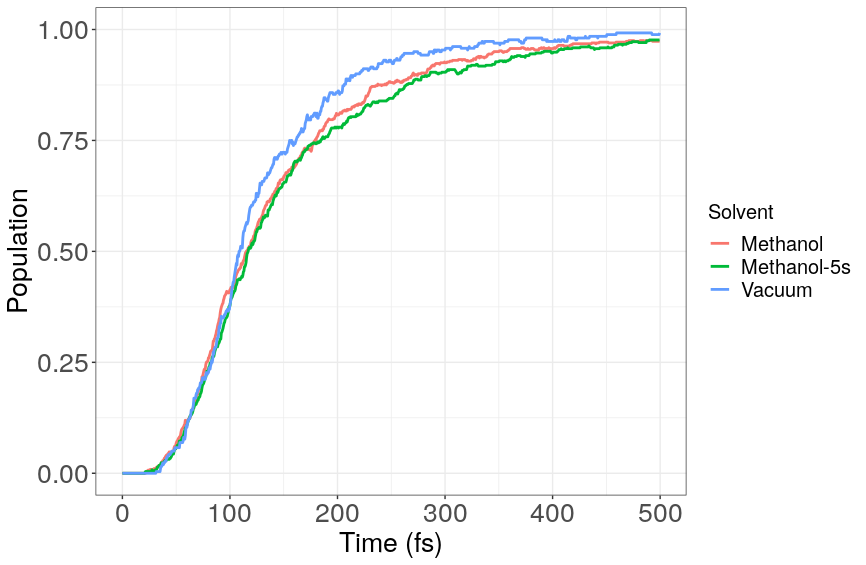
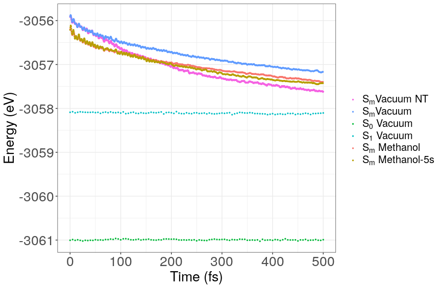
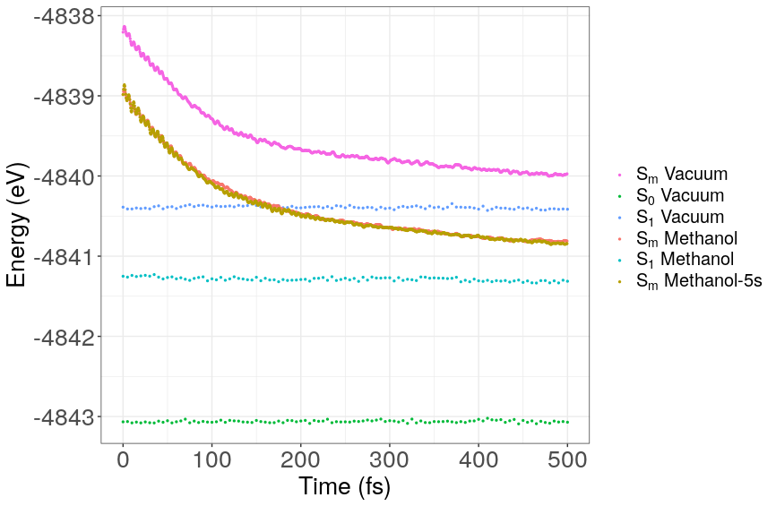

Paper 2 Figure Description
Table of Contents
Populations
Vacuum
Shown below are the population trajectories for PPV3 and PPV3-NO2 in vacuum. States with very short lifespans were dropped for clarity.
PPV3-No-Trivial
Using no trivial crossing and basic decoherence, the population plot looks very similar to that found in Tammie's thesis
CLOSED:
PPV3
Figure 1: Populations for the excited states with extended lifespans for PPV3. Sm represents the initial state, which varied from S9 to S15.
PPV3-NO2
Figure 2: Populations for the excited states with extended lifespans for PPV3-NO2. Sm represents the initial state, which varied from S9 to S15.
S1 vs Time
To the following graphs we fitted a function \(\frac{Ae^{t/\tau}}{A+e^{t/\tau}} - \frac{A}{1+A}\) to produce the accompanying tables, where \(\tau\) is the time constant, and A normalizing factor restricting the S1 population from becoming greater than 1.
PPV3
Figure 3: Population of the first excited state (S1) of PPV3 in various solvents obtained from the fraction of trajectories in each state.
| Solvent | \(\tau\) (fs) | A |
| Vacuum | 671 | 1.16 |
| CH3OH | 693 | 1.06 |
| CH3OH with 5QM | 550 | 1.10 |
PPV3-NO2

Figure 4: Population of the first excited state (S1) of PPV3-NO2 in various solvents obtained from the fraction of trajectories in each state.
| Solvent | \(\tau\) (fs) | A |
| Vacuum | 84.6 | 1.64 |
| CH3OH | 90.4 | 1.62 |
| CH3OH with 5QM | 93.8 | 1.61 |
Potential Energy Decay
PPV3

Figure 5: Average potential energy during dynamics at 300K. Vacuum (No Trivial) is dynamics ran without trivial crossings.
PPV3-NO2

Figure 6: Average potential energy during dynamics at 300K.
Absorption & Fluorescence
PPV3 All Solvents
PPV3-NO2 All Solvents
BLA
PPV3
Figure 7: BLA parameter average over the ensemble of PPV3 trajectories starting at states, S0, S1, and Sm
PPV3-NO2